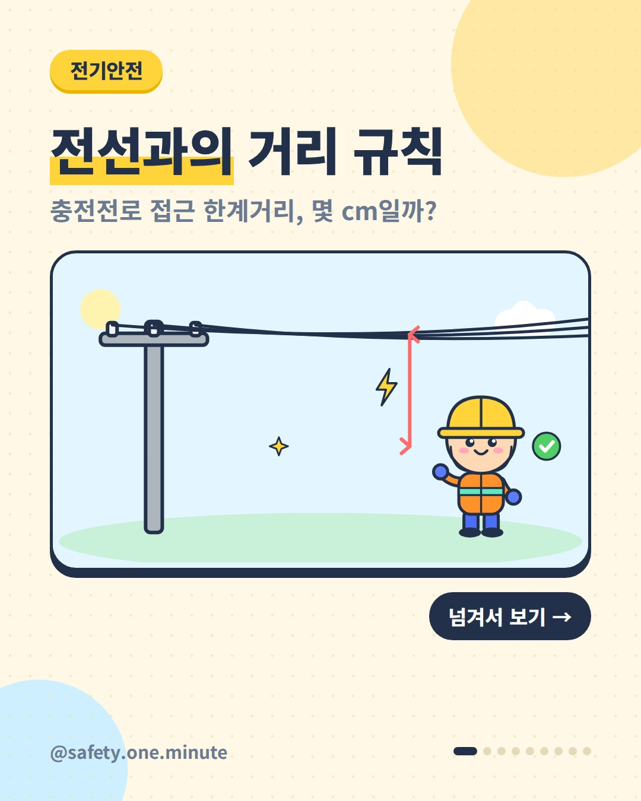
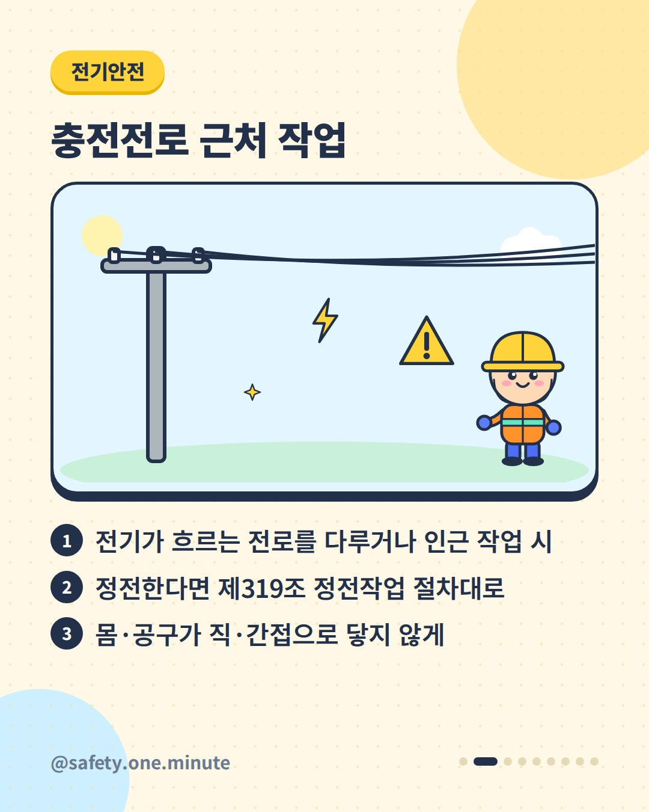
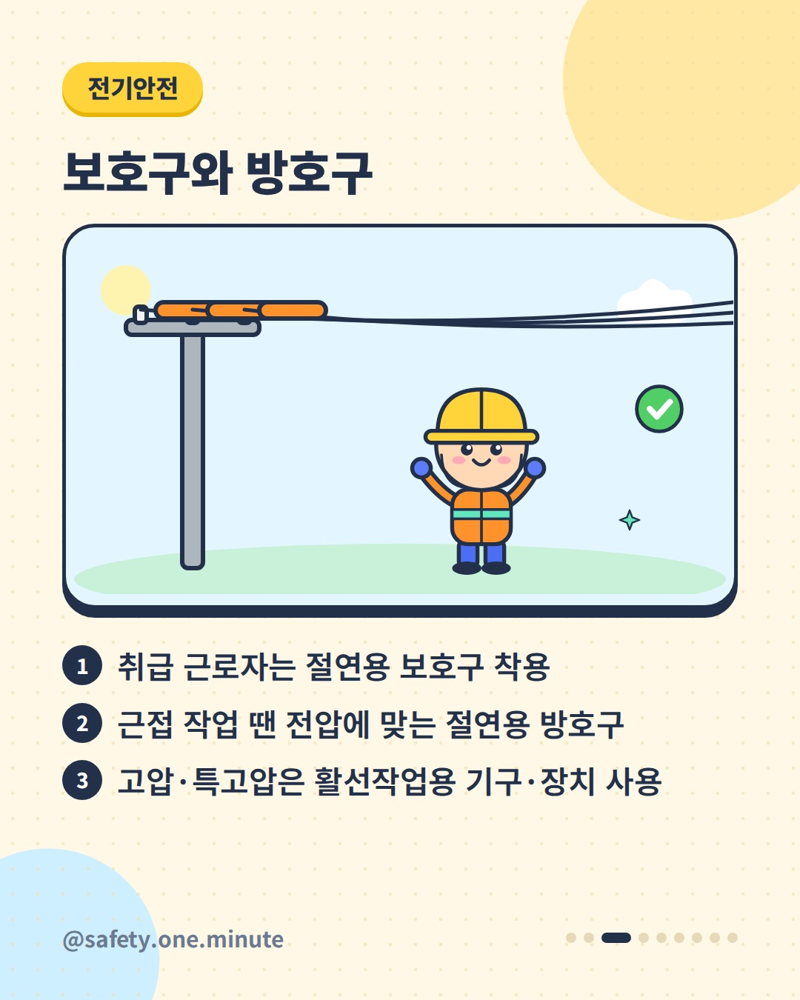
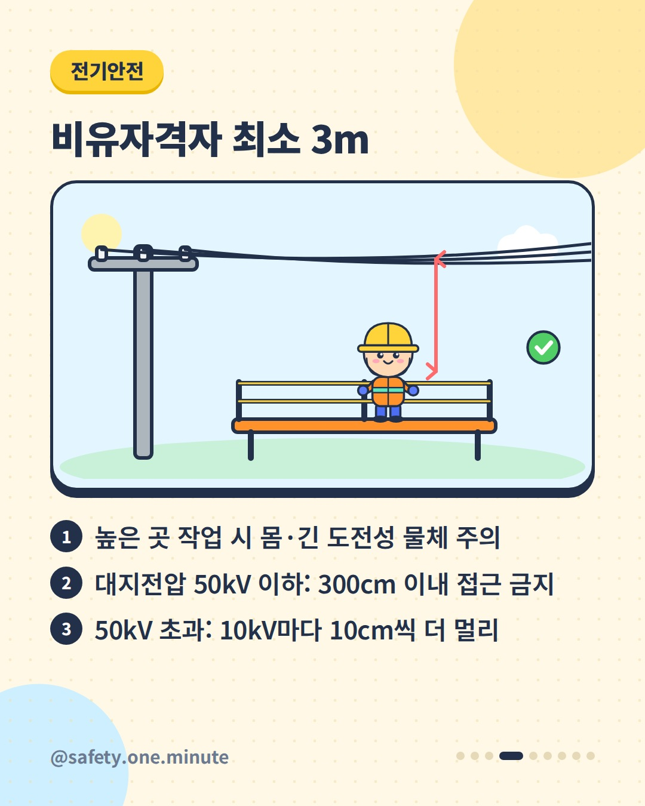
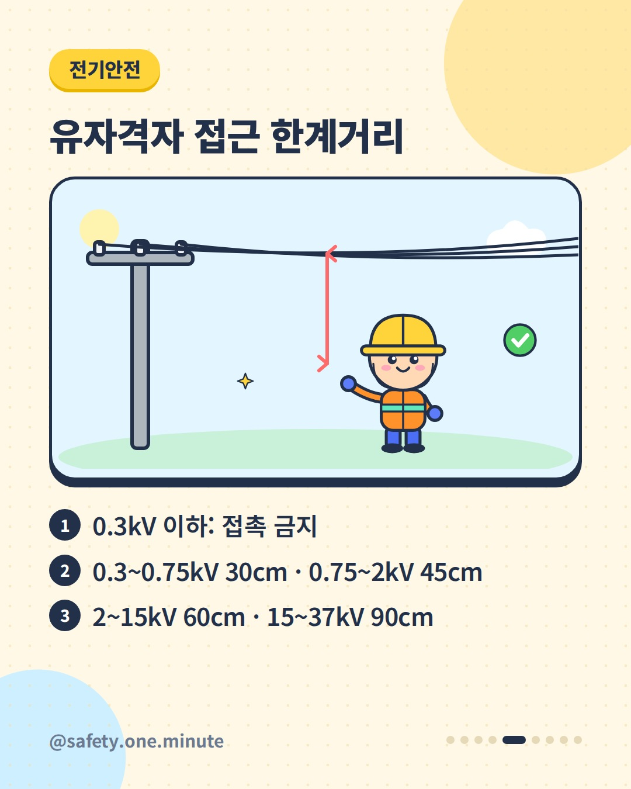
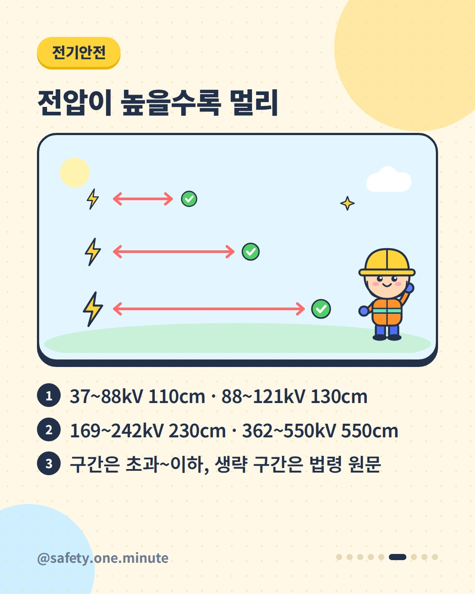
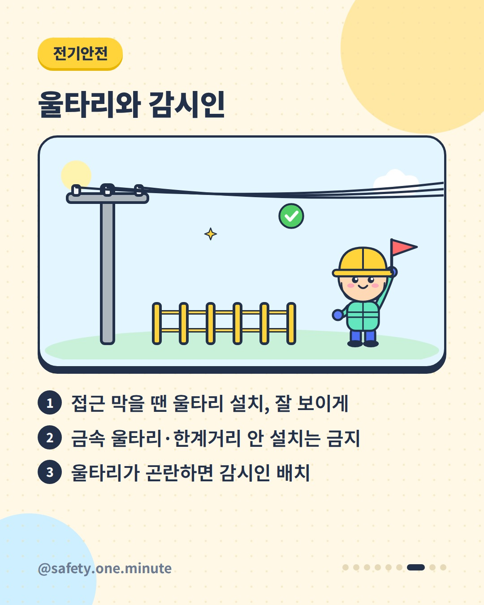
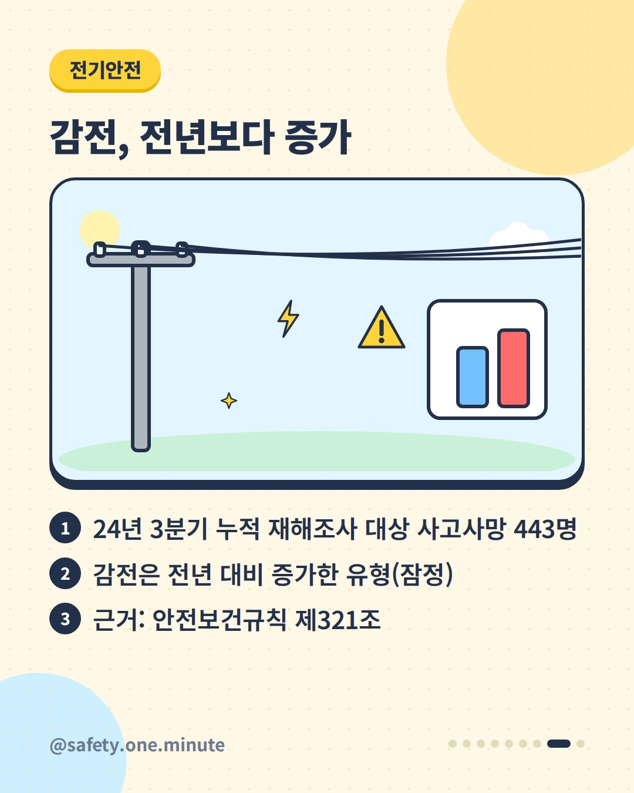
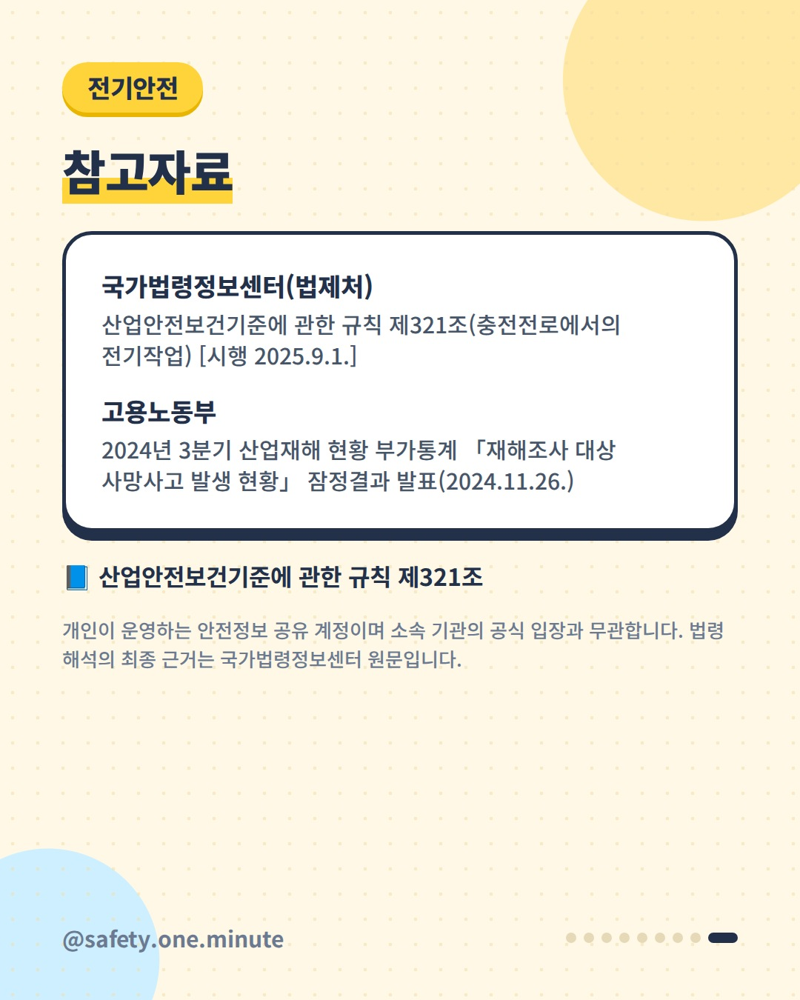

전선과의 거리 규칙 — 9장 (4:5)









캡션
전기가 흐르는 전선 가까이에서 일할 때, 얼마나 떨어져야 할까요? 산업안전보건기준에 관한 규칙 제321조는 충전전로를 다루거나 그 인근에서 작업할 때의 조치를 정하고 있습니다. ▪ 정전시키는 경우 제319조의 정전작업 절차를 따릅니다. ▪ 몸이 전로에 직접, 또는 공구·기기를 통해 간접적으로 닿지 않게 합니다. ▪ 충전전로를 취급하면 절연용 보호구, 근접 작업이면 전압에 맞는 절연용 방호구, 고압·특별고압은 활선작업용 기구·장치를 씁니다. 접근 거리도 정해져 있습니다. ▪ 유자격자가 아닌 사람이 높은 곳에서 작업할 때: 대지전압 50kV 이하 300cm, 50kV 초과는 10kV당 10cm씩 더한 거리 안으로 몸이나 긴 도전성 물체가 접근하지 않게 합니다. ▪ 유자격자: 선간전압별 접근 한계거리(예: 0.3kV 이하 접촉금지, 2kV 초과~15kV 이하 60cm, 15kV 초과~37kV 이하 90cm)를 지킵니다. 카드의 '~'는 '초과~이하' 구간입니다. 접근을 막아야 하면 울타리를 쉽게 알아보도록 설치하되, 도전성 금속 울타리나 한계거리 안 설치는 안 됩니다. 울타리가 곤란하면 감시인을 둡니다. 고용노동부 발표(2024.11.)에 따르면 2024년 3분기 누적 재해조사 대상 사고사망(잠정) 가운데 감전은 전년보다 늘어난 유형이었습니다. ※ 전체 표와 예외 조건은 법령 원문(2025.9.1. 시행본 기준)을 확인하세요. 출처: - 국가법령정보센터(법제처) – 산업안전보건기준에 관한 규칙 제321조 - 고용노동부 – 2024년 3분기 재해조사 대상 사망사고 발생 현황(2024) 개인이 운영하는 안전정보 공유 계정이며 소속 기관의 공식 입장과 무관합니다. 법령 해석의 최종 근거는 국가법령정보센터 원문입니다. #전기안전 #감전예방 #충전전로 #접근한계거리 #활선작업 #절연용보호구 #절연용방호구 #전기작업 #산업안전보건기준에관한규칙 #산업안전 #안전수칙 #현장안전 #안전보건 #전기공사